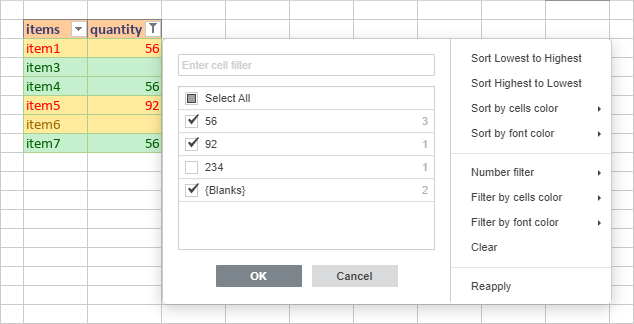
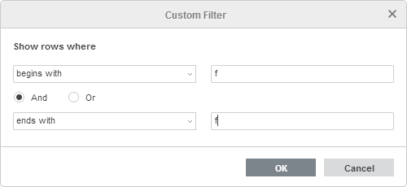
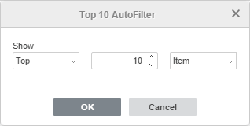
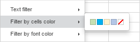
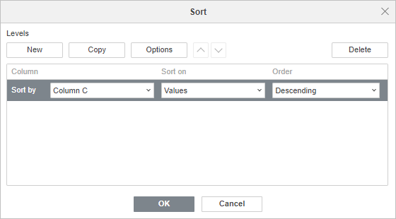
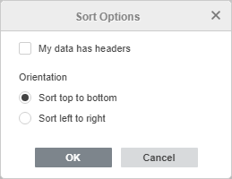
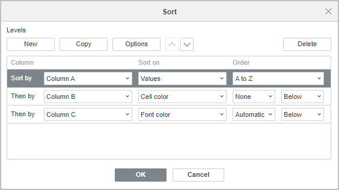

Sortiranje i filtriranje podataka
Sortiranje podataka
Možete brzo sortirati podatke u Spreadsheet Editor-u koristeći jednu od sledećih opcija:
- Ascending se koristi za sortiranje podataka rastućim redosledom – od A do Z abecedno ili od najmanjeg ka najvećem broju za numeričke podatke.
- Descending se koristi za sortiranje podataka opadajućim redosledom – od Z do A abecedno ili od najvećeg ka najmanjem broju za numeričke podatke.
Napomena: opcije Sort su dostupne i na karticama Home i Data.
Da biste sortirali podatke,
- izaberite opseg ćelija koji želite da sortirate (možete izabrati jednu ćeliju unutar opsega da biste sortirali ceo opseg),
- kliknite na ikonu Sort ascending koja se nalazi na kartici Home ili Data na gornjoj alatnoj traci da biste sortirali podatke rastućim redosledom,
ILI
kliknite na ikonu Sort descending koja se nalazi na kartici Home ili Data na gornjoj alatnoj traci da biste sortirali podatke opadajućim redosledom.
Napomena: ako izaberete jednu kolonu/red unutar opsega ćelija ili deo kolone/reda, bićete upitani da li želite da proširite izbor tako da uključuje susedne ćelije ili da sortirate samo izabrane podatke.
Takođe možete sortirati podatke koristeći opcije iz kontekstnog menija. Kliknite desnim tasterom miša na izabrani opseg ćelija, izaberite opciju Sort iz menija i zatim izaberite opciju Ascending ili Descending iz podmenija.
Moguće je i sortirati podatke po boji koristeći kontekstni meni:
- kliknite desnim tasterom miša na ćeliju koja sadrži boju po kojoj želite da sortirate podatke,
- izaberite opciju Sort iz menija,
-
izaberite potrebnu opciju iz podmenija:
- Selected Cell Color on top - da se unosi sa istom bojom pozadine ćelije prikažu na vrhu kolone,
- Selected Font Color on top - da se unosi sa istom bojom fonta prikažu na vrhu kolone.
Filtriranje podataka
Da biste prikazali samo redove koji ispunjavaju određene kriterijume, a sakrili ostale, koristite opciju Filter.
Napomena: opcije Filter su dostupne i na karticama Home i Data.
Da biste uključili filter,- Izaberite opseg ćelija koji sadrži podatke za filtriranje (možete izabrati jednu ćeliju unutar opsega da biste filtrirali ceo opseg),
-
Kliknite na ikonu Filter koja se nalazi na kartici Home ili Data na gornjoj alatnoj traci.
Padajuća strelica pojaviće se u prvoj ćeliji svake kolone izabranog opsega ćelija. To znači da je filter uključen.
Da biste primenili filter,
- Kliknite na padajuću strelicu . Otvoriće se lista opcija Filter:

Napomena: možete podesiti veličinu prozora filtera prevlačenjem njegove desne ivice udesno ili ulevo kako biste podatke prikazali što je moguće preglednije.
-
Podesite parametre filtera. Možete postupiti na jedan od sledećih načina: izabrati podatke za prikaz, filtrirati podatke po određenim kriterijumima ili filtrirati podatke po boji.
-
Izaberite podatke za prikaz
Poništite polja za potvrdu pored podataka koje želite da sakrijete. Radi vaše удобности, svi podaci unutar liste opcija Filter sortirani su rastućim redosledom.
Broj jedinstvenih vrednosti u filtriranom opsegu prikazan je desno od svake vrednosti unutar prozora filtera.
Napomena: polje za potvrdu {Blanks} odgovara praznim ćelijama. Dostupno je ako izabrani opseg ćelija sadrži najmanje jednu praznu ćeliju.
Da biste olakšali proces, koristite polje za pretragu na vrhu. Unesite upit, u celosti ili delimično, u polje – vrednosti koje sadrže ove znakove biće prikazane u listi ispod. Sledeće dve opcije će takođe biti dostupne:
- Select All Search Results - podrazumevano je označeno. Omogućava izbor svih vrednosti koje odgovaraju vašem upitu u listi.
- Add current selection to filter - ako označite ovo polje, izabrane vrednosti neće biti sakrivene kada primenite filter.
Nakon što izaberete sve potrebne podatke, kliknite na dugme OK u listi opcija Filter da biste primenili filter.
-
Filtriranje podataka po određenim kriterijumima
U zavisnosti od podataka u izabranoj koloni, možete izabrati opciju Number filter ili Text filter na desnoj strani liste opcija Filter, a zatim izabrati jednu od opcija iz podmenija:
- Za Number filter dostupne su sledeće opcije: Equals..., Does not equal..., Greater than..., Greater than or equal to..., Less than..., Less than or equal to..., Between, Top 10, Above Average, Below Average, Custom Filter....
- Za Text filter dostupne su sledeće opcije: Equals..., Does not equal..., Begins with..., Does not begin with..., Ends with..., Does not end with..., Contains..., Does not contain..., Custom Filter....
Nakon što izaberete jednu od gore navedenih opcija (osim Top 10 i Above/Below Average), otvoriće se prozor Custom Filter. Odgovarajući kriterijum biće izabran u gornjoj padajućoj listi. Unesite potrebnu vrednost u polje sa desne strane.
Da biste dodali još jedan kriterijum, koristite radio-dugme And ako je potrebno da podaci ispune oba kriterijuma ili kliknite radio-dugme Or ako može biti ispunjen bilo koji ili oba kriterijuma. Zatim izaberite drugi kriterijum iz donje padajuće liste i unesite potrebnu vrednost sa desne strane.
Kliknite OK da biste primenili filter.

Ako izaberete opciju Custom Filter... iz liste opcija Number/Text filter, prvi kriterijum se ne bira automatski, već ga možete sami postaviti.
Ako izaberete opciju Top 10 iz liste opcija Number filter, otvoriće se novi prozor:

Prva padajuća lista omogućava izbor da li želite da prikažete najveće (Top) ili najmanje (Bottom) vrednosti. Drugo polje omogućava da odredite koliko unosa iz liste ili koji procenat od ukupnog broja unosa želite da prikažete (možete uneti broj od 1 do 500). Treća padajuća lista omogućava podešavanje jedinica mere: Item ili Percent. Kada su potrebni parametri podešeni, kliknite OK da biste primenili filter.
Ako izaberete opciju Above/Below Average iz liste opcija Number filter, filter će biti odmah primenjen.
-
Filtriranje podataka po boji
Ako opseg ćelija koji želite da filtrirate sadrži neke ćelije koje ste formatirali promenom boje pozadine ili boje fonta (ručno ili korišćenjem unapred definisanih stilova), možete koristiti jednu od sledećih opcija:
- Filter by cells color - da prikažete samo unose sa određenom bojom pozadine ćelije i sakrijete ostale,
- Filter by font color - da prikažete samo unose sa određenom bojom fonta ćelije i sakrijete ostale.
Kada izaberete potrebnu opciju, otvoriće se paleta koja sadrži boje korišćene u izabranom opsegu ćelija. Izaberite jednu od boja da biste primenili filter.

Dugme Filter pojaviće se u prvoj ćeliji kolone. To znači da je filter primenjen. Broj filtriranih zapisa biće prikazan na statusnoj traci (npr. 25 of 80 records filtered).
Napomena: kada je filter primenjen, redovi koji su filtrirani ne mogu se menjati pri automatskom popunjavanju, formatiranju ili brisanju vidljivog sadržaja. Takve radnje utiču samo na vidljive redove, dok redovi koji su sakriveni filterom ostaju nepromenjeni. Prilikom kopiranja i lepljenja filtriranih podataka, mogu se kopirati i nalepiti samo vidljivi redovi. Ovo nije isto kao ručno sakriveni redovi na koje utiču sve slične radnje.
-
Izaberite podatke za prikaz
Sortiranje filtriranih podataka
Možete da podesite redosled sortiranja podataka koje ste omogućili ili na koje ste primenili filter. Kliknite na strelicu padajućeg menija ili dugme Filter i izaberite jednu od opcija u listi opcija Filter:
- Sortiraj od najmanje ka najvećoj vrednosti - omogućava sortiranje podataka u rastućem redosledu, prikazujući najmanju vrednost na vrhu kolone,
- Sortiraj od najveće ka najmanjoj vrednosti - omogućava sortiranje podataka u opadajućem redosledu, prikazujući najveću vrednost na vrhu kolone,
- Sortiraj po boji ćelija - omogućava izbor jedne od boja i prikaz unosa sa istom bojom pozadine ćelije na vrhu kolone,
- Sortiraj po boji fonta - omogućava izbor jedne od boja i prikaz unosa sa istom bojom fonta na vrhu kolone.
Poslednje dve opcije mogu se koristiti ako opseg ćelija koji želite da sortirate sadrži neke ćelije koje ste formatirali promenom boje pozadine ili fonta (ručno ili korišćenjem unapred definisanih stilova).
Smer sortiranja biće označen strelicom na dugmadima filtera.
- ako su podaci sortirani u rastućem redosledu, strelica padajućeg menija u prvoj ćeliji kolone izgleda ovako: a dugme Filter izgleda na sledeći način: .
- ako su podaci sortirani u opadajućem redosledu, strelica padajućeg menija u prvoj ćeliji kolone izgleda ovako: a dugme Filter izgleda na sledeći način: .
Takođe možete brzo sortirati podatke po boji koristeći opcije kontekstnog menija:
- kliknite desnim tasterom miša na ćeliju koja sadrži boju po kojoj želite da sortirate podatke,
- izaberite opciju Sortiraj iz menija,
-
izaberite neophodnu opciju iz podmenija:
- Boja izabrane ćelije na vrhu - za prikaz unosa sa istom bojom pozadine ćelije na vrhu kolone,
- Boja fonta izabrane ćelije na vrhu - za prikaz unosa sa istom bojom fonta na vrhu kolone.
Filtriraj po sadržaju izabrane ćelije
Takođe možete brzo filtrirati podatke po sadržaju izabrane ćelije koristeći opcije kontekstnog menija. Kliknite desnim tasterom miša na ćeliju, izaberite opciju Filter iz menija i zatim izaberite jednu od dostupnih opcija:
- Filtriraj po vrednosti izabrane ćelije - za prikaz samo unosa sa istom vrednošću koju sadrži izabrana ćelija.
- Filtriraj po boji ćelije - za prikaz samo unosa sa istom bojom pozadine ćelije kao što ima izabrana ćelija.
- Filtriraj po boji fonta - za prikaz samo unosa sa istom bojom fonta kao što ima izabrana ćelija.
Formatiraj kao šablon tabele
Da biste olakšali rad sa podacima, Spreadsheet Editor omogućava da primenite šablon tabele na izabrani opseg ćelija uz automatsko uključivanje filtera. Da biste to uradili,
- izaberite opseg ćelija koji treba da formatirate,
- kliknite na ikonu Formatiraj kao šablon tabele koja se nalazi na kartici Home na gornjoj traci sa alatkama.
- izaberite potrebni šablon u galeriji,
- u otvorenom iskačućem prozoru proverite opseg ćelija koje će biti formatirane kao tabela,
- označite opciju Naslov ako želite da zaglavlja tabele budu uključena u izabrani opseg ćelija, u suprotnom će red zaglavlja biti dodat na vrhu dok će izabrani opseg ćelija biti pomeren jedan red nadole,
- kliknite na dugme OK da biste primenili izabrani šablon.
Šablon će biti primenjen na izabrani opseg ćelija i moći ćete da uređujete zaglavlja tabele i primenite filter za rad sa podacima. Da biste saznali više o radu sa formatiranim tabelama, pogledajte ovu stranicu.
Ponovo primeni filter
Ako su filtrirani podaci izmenjeni, možete osvežiti filter da biste prikazali ažurirani rezultat:
- kliknite na dugme Filter u prvoj ćeliji kolone koja sadrži filtrirane podatke,
- izaberite opciju Ponovo primeni u otvorenoj listi opcija Filter.
Takođe možete kliknuti desnim tasterom miša na ćeliju unutar kolone koja sadrži filtrirane podatke i izabrati opciju Ponovo primeni iz kontekstnog menija.
Obriši filter
Da biste obrisali filter,
- kliknite na dugme Filter u prvoj ćeliji kolone koja sadrži filtrirane podatke,
- izaberite opciju Obriši u otvorenoj listi opcija Filter.
Takođe možete postupiti na sledeći način:
- izaberite opseg ćelija koji sadrži filtrirane podatke,
- kliknite na ikonu Obriši filter koja se nalazi na kartici Home ili Data na gornjoj traci sa alatkama.
Filter će ostati omogućen, ali će svi primenjeni parametri filtera biti uklonjeni, a dugmad Filter u prvim ćelijama kolona promeniće se u strelice padajućeg menija .
Ukloni filter
Da biste uklonili filter,
- izaberite opseg ćelija koji sadrži filtrirane podatke,
- kliknite na ikonu Filter koja se nalazi na kartici Home ili Data na gornjoj traci sa alatkama.
Filter će biti onemogućen, a strelice padajućeg menija će nestati iz prvih ćelija kolona.
Sortiraj podatke po više kolona/redova
Da biste sortirali podatke po više kolona/redova, možete kreirati više nivoa sortiranja koristeći funkciju Prilagođeno sortiranje.
- izaberite opseg ćelija koji želite da sortirate (možete izabrati jednu ćeliju da biste sortirali ceo opseg),
- kliknite na ikonu Prilagođeno sortiranje koja se nalazi na kartici Data na gornjoj traci sa alatkama,
-
pojaviće se prozor Sortiranje. Sortiranje po kolonama je podrazumevano izabrano.

-
koristite odeljak Nivoi da biste dodali nove nivoe i upravljali dodatim nivoima.
- dugme Novo za dodavanje novog nivoa, izaberite drugu kolonu / red koji želite da sortirate i navedite ostale parametre sortiranja u polju Zatim po kao što je opisano iznad. Po potrebi dodajte više nivoa na isti način,
- dugme Kopiraj za kopiranje izabranog nivoa i dupliciranje svih postojećih podešavanja,
-
dugme Opcije za promenu orijentacije sortiranja (tj. sortiranje podataka po redovima umesto po kolonama). Kliknite na dugme da biste otvorili prozor Opcije sortiranja:

- označite polje Moji podaci imaju zaglavlja, ako je potrebno
- izaberite potrebnu Orijentaciju: Sortiraj od vrha ka dnu za sortiranje podataka po kolonama ili Sortiraj sleva nadesno za sortiranje podataka po redovima,
- kliknite na OK da biste primenili izmene i zatvorili prozor.
- dugme Obriši za brisanje izabranog nivoa,
- dugmad sa strelicama Pomeri nivo nagore / Pomeri nivo nadole za promenu redosleda nivoa.
-
podesite prvi nivo sortiranja u polju Sortiraj po:

- u odeljku Kolona / Red izaberite prvu kolonu / red koji želite da sortirate,
- u listi Sortiraj po izaberite jednu od sledećih opcija: Vrednosti, Boja ćelije ili Boja fonta,
-
u listi Redosled navedite potrebni redosled sortiranja. Dostupne opcije se razlikuju u zavisnosti od izabrane opcije u listi Sortiraj po:
- ako je izabrana opcija Vrednosti, izaberite opciju Rastuće / Opadajuće ako opseg ćelija sadrži brojeve ili opciju A do Z / Z do A ako opseg ćelija sadrži tekstualne vrednosti,
- ako je izabrana opcija Boja ćelije, izaberite potrebnu boju ćelije i izaberite opciju Vrh / Dno za kolone ili Levo / Desno za redove,
- ako je izabrana opcija Boja fonta, izaberite potrebnu boju fonta i izaberite opciju Vrh / Dno za kolone ili Levo / Desno za redove.
- kliknite na OK da biste primenili izmene i zatvorili prozor.
Podaci će biti sortirani prema navedenim nivoima sortiranja.